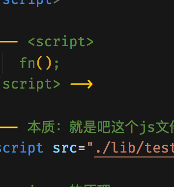

<!DOCTYPE html>
<html lang="en">

<head>
    <meta charset="UTF-8">
    <meta name="viewport" content="width=device-width, initial-scale=1.0">
    <meta http-equiv="X-UA-Compatible" content="ie=edge">
    <title>Document</title>
</head>

<body>
    <script>
        function fn() {
            console.log("fn---");
        }
    </script>

    <!-- <script>
        fn();
    </script> -->

    <!-- 本质：就是吧这个js文件的内容放在这个标签中 -->
    <!-- http://127.0.0.1/h5-1913/day25/code/client/02-jsonP%e7%ae%80%e5%8d%95%e4%bb%8b%e7%bb%8d.html -->
    <!-- http://127.0.0.1/h5-1913/day25/code/client/lib/test.js -->
    <script src="./lib/test.js"></script>

    <!-- https://code.jquery.com/jquery-3.4.1.js -->
    <script src="https://code.jquery.com/jquery-3.4.1.js"></script>
    <script>
        console.log(jQuery, $);
    </script>

    <!-- jsonp的原理 -->
    <!-- 因为浏览器的同源访问策略，所以Ajax无法直接跨越发送网络请求，但是HTML页面中某些标签是可以跨域 -->
    <!-- img 图片 && script -->

    <!-- 当前路径：http://127.0.0.1/h5-1913/day25/code/client/02-jsonP%e7%ae%80%e5%8d%95%e4%bb%8b%e7%bb%8d.html -->
    <!-- 图片路径：http://127.0.0.1/h5-1913/day25/code/client/img/Snip20191227_22.png -->
    <!--  -->

    <!-- 图片路径：http://wendingding.com/%E9%B2%B8%E9%B1%BC.png -->
    <!--  -->

    <!-- 原理 -->
    <!-- (1) 在页面中应该要先声明一个函数 -->
    <!-- (2) 在页面中通过script标签来发请求获取服务器端返回的数据( 本质上是一个函数调用 ) -->

</body>

</html>